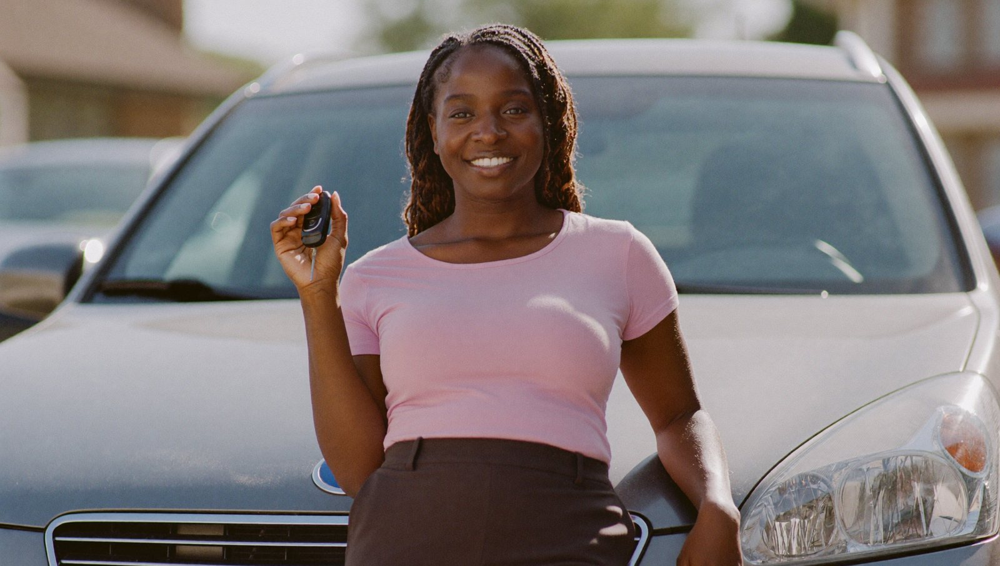

Financing built around your situation — not against it.
Most lenders start by hunting for a reason to say no. We start from the other end — with the plan to get you approved. A bankruptcy, a repossession, no credit history, or a first car: each is an ordinary day here, and none of them ends the conversation. You get a real answer, usually the same day, with $0 down on most loans and no judgment attached.
Four situations. One answer: approved.
If you've been turned away before, chances are you're already on this list. Here's the short version — the full detail on each is right below.
Bankruptcy — Chapter 7 & 13
Discharged, or still open. We work with your trustee when the plan requires it and get you moving.
Bad credit & past repossession
Collections, a low score, a repo on the record — none of it disqualifies you. We read the whole person.
No credit & first-time buyers
A blank credit file is welcome. We approve you and help build your credit from the very first payment.
$0 down on most loans
Most approvals need nothing down. Keep your savings — the only out-of-pocket is tax, title & license.
Approved — even while your bankruptcy is still open.
A bankruptcy on your record doesn't mean years of waiting for a car. We finance buyers who are discharged and buyers still inside an active case, both Chapter 7 and Chapter 13. It's one of the things we do most.
Chapter 7
Discharged, or recently filed? We can usually move right away. An auto loan is one of the fastest, healthiest ways to rebuild after a Chapter 7 — reliable transportation and a fresh trade line reporting on-time payments, working for you at the same time.
Chapter 13
Still inside a repayment plan? That's fine. When the court requires it, we help coordinate trustee approval so the loan fits your plan — no guesswork on your end. Plenty of our Chapter 13 buyers drive off the same week they ask.
- Open or discharged case — both welcome, Ch. 7 & 13
- We handle the trustee-approval step for you when it's needed
- $0 down on most loans — only tax, title & license out of pocket
- Payments report to the bureaus to help rebuild your credit
A low score is a number, not a verdict.
Collections, charge-offs, a repossession in the rear-view, a score you'd rather not say out loud — none of it disqualifies you here. We look at where you are today and where you're headed, not just the worst line on the report.
After a repossession
A repo isn't a permanent no. We've put plenty of buyers back behind the wheel — often in something nicer than what they lost.
The whole picture
Steady income and a real plan carry weight here. We weigh your full situation — not one credit number in isolation.
Rebuild as you drive
Most Fresh Start loans report to the bureaus, so every on-time payment quietly lifts your score, month after month.
No credit history? That's the right place to start.
Everyone's first car loan comes from somewhere. If you've never financed anything before, we're glad to be your first — and to help you build the kind of record that opens doors later.
- No history required. A blank credit file is welcome — we approve first-time buyers every week.
- Build from day one. On-time payments report to the bureaus, so your very first loan starts your credit story.
- Plain-English guidance. We walk you through every line, so nothing about your first loan feels like a trap.
- $0 down on most loans. Keep your savings — most first-time approvals need nothing down.
Keep your cash. Drive off the same day.
On most approvals you put nothing down to drive away, so your savings stay yours. The only out-of-pocket amounts are tax, title & license — the fees every dealer is required by law to collect. No invented "processing" surprise, no inflated down payment to get you in the door.
$0 down, most loans
The majority of Fresh Start approvals need zero down — you drive off with the money still in your pocket.
Honest fine print
The one exception is state tax, title & license — required by law, never a markup we invented. That's the whole story.
Fast answers
Decisions often land within the hour — sometimes in as little as fifteen minutes — so "$0 down" turns into keys in hand the same day.
Three steps, no runaround.
Apply in a couple minutes
A short, private request from your phone. No SSN required to start.
We review & call
Not a bot, not a form letter. A real person looks at your full situation and calls you back — most decisions land within the hour, some in fifteen minutes.
Drive off & rebuild
Pick your car, sign, and go — $0 down on most loans. Your on-time payments report to the bureaus, so your score climbs as you drive.
Fresh Start financing questions.
Can I be approved during an open bankruptcy?
Yes. We finance buyers in both Chapter 7 and Chapter 13, whether the case is discharged or still open. When a Chapter 13 plan requires it, we help coordinate trustee approval so the loan fits your plan — you don't have to sort that part out alone.
How much do I need to put down?
Most loans are $0 down. The only amounts owed out of pocket are state tax, title & license, which every dealer is required to collect. We tell you your exact numbers before you sign — no surprises.
What should I bring to finish?
A valid driver's license, proof of income (recent pay stubs or bank statements), proof of residence (a utility bill or lease), and a few references. If you're in a Chapter 13, bring your plan details too. Not sure? Call and we'll tell you exactly what applies to you.
Can I buy if I'm out of state?
Yes. We approve buyers nationwide, and our fly-in program brings out-of-area buyers in to pick their car in person. The fastest way to know for sure is to call (972) 436-1600.

A real fresh start.
Turned down before? You're exactly who this was built for.
One short form is all it takes to find out what you're approved for — with $0 down on most loans and a real person, not a bot, on the other end of it.
Get approved todayFind out what you're approved for.
No SSN to begin, no judgment — just a real answer, fast. Bankruptcy, bad credit, first car: let's get your fresh start started today.